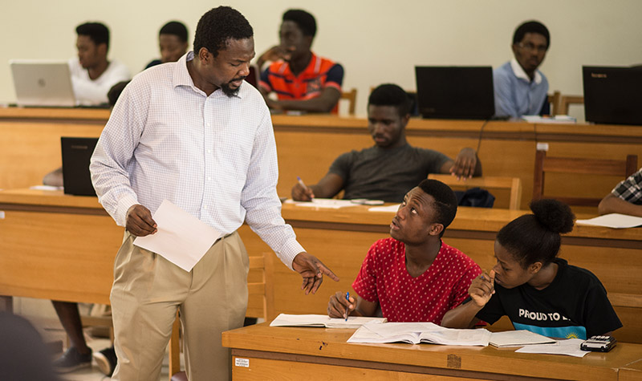
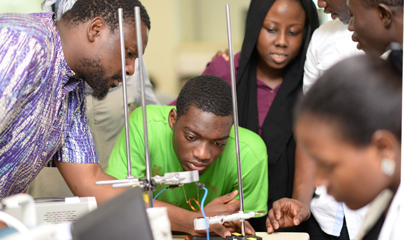

Intel research scientist, Dr. Tawfiq Musah, finds way to give back at Ashesi
Right from when he was in high school, Dr. Tawfiq Musah had always sought out opportunities to teach others. So when he had the opportunity to take an extended sabbatical from his work at Intel Corporation, he immediately contacted Ashesi’s Engineering department, seeking an opportunity to impart knowledge. “I am an educator at heart,” he explained. “Every opportunity I have, I try to teach or learn something. Lately, however, my attention has also been drawn towards working in some capacity to help ensure that there is adequately skilled human resource in Ghana who will be able to drive the establishment of world class engineering institutions - and universities are an ideal place to find and grow that kind of talent.”
At Intel, Dr. Musah’s research work is based on integrated circuits for communication, dealing mainly with the design of circuits in microprocessors that drive data to peripherals or devices within the same environment. Teaching Ashesi’s Electromagnetism class for the Fall 2016 semester, he was able to borrow significantly from his professional experience to give the students a practical worldview of how theories they learned work in industry. “As opposed to bigger and long-established institutions which are already set in their ways, newer programs like Ashesi lend more to influence and impact,” he said. “Additionally, Ashesi’s philosophy works well in encouraging both teaching and learning, so for me, it was a good place to spend some time. When you also have a diverse student body that is open to learning, and who not only have a Ghanaian worldview, but an international one, you know that when you’re trying to push something, you’re not only impacting Ghana. These students are going to go all over Africa, so your impact can be far-reaching.”
Before leaving for college in the United States several years ago, Dr. Musah, who was raised in Ghana, was exposed to some of the gaps apparent in the local educational system. Now he is constantly seeking ways to help address some of them. “What I have found is that there is a lack of resources to give students a practical feel of engineering, so they do not get to play with things with their hands and be more creative to get past the technology barrier that most of us have coming from our basic education system to the tertiary,” he said. “I want to figure out a way to facilitate practical engineering education so we can push development on the continent, where we are not just a branch of a bigger multinational organization, but where we are actually driving research and producing technologies that cater to our needs.”